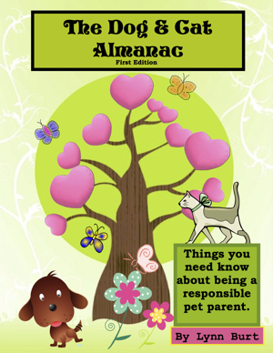

Pet-Friendly Downloads
Pet-Friendly Downloads


Here you can find downloadable content including Lilac City Dog Walking & Care's standard client information forms and service agreements. Also, we like to help educate our clients and the general public on a variety of important pet care issues and will be providing downloadable/printable handouts and literature. I have written an eBook recently which is available for purchase in this section as well.
The Dog & Cat Almanac
- - Lynn Burt, First Edition © Copyright 2013

This handy little ebook will provide you with lots of information regarding dogs and cats. I created the first edition of The Dog & Cat Almanac with the intention of helping people learn more about being responsible pet parents. Keeping in mind the lifetime I have spent near dogs and cats via my father's veterinary practice, I put together some practical tips, guides, and informational tidbits that I hope you will enjoy reading!
Topics include:
- Pet nutrition
- Crate training
- Common household toxins
- Pet adoption
- Importance of vaccines and general pet health
- Much more!
Forms & Service Agreements
- - Lilac City Dog Walking & Care © Copyright 2013
We ask that all prospective clients take the time to fill out this form by right clicking the screen shot of the form, saving it, filling it out and emailing it promptly back to us as a file attachment to info@lilac-city-dogs.com. Doing this will ensure that we maintain our records and info about the people and pets that we serve.
Dog Fighting Awareness Poster
- - American Humane Society
A downloadable and printable poster from the American Humane Society to raise awareness of dog-fighting and how you can report dogfighting activity anonymously! Help save countless animals from cruelty and death!
Puppy Mill Fact Sheet
- - American Humane Society
A fact sheet from the Humane Society about puppy mills and what you can do to take action against these cruel operations.
stau Cat Overpopulation Awareness
Cat Overpopulation Awareness
- - American Humane Society
A load of information about the severe overpopulation of cats and what you can do to help a feral or homeless cat!
stau Puppy Socialization
Puppy Socialization
- - Dogs Trust (UK Dog Welfare Charity)
A factsheet from our friends across the pond in the UK about the importance of socialization for puppies and how to get started!
stau The Importance of Bats
The Importance of Bats
- - Bat Conservation International
A cause that is near and dear to my heart is saving the bats of the world. Bats are pollinators, seed-dispensers, and natural exterminators! A single bat can consume 1,000 mosquitoes on a summer's night. I encourage people to build their own bat houses! This provides bats with a safe habitat to hibernate and discourages them from seeking refuge in your attic! You can find bat house building instructions here.

If you can think of any other links that might be of interest to us please email us today and we will consider their inclusion on this page!